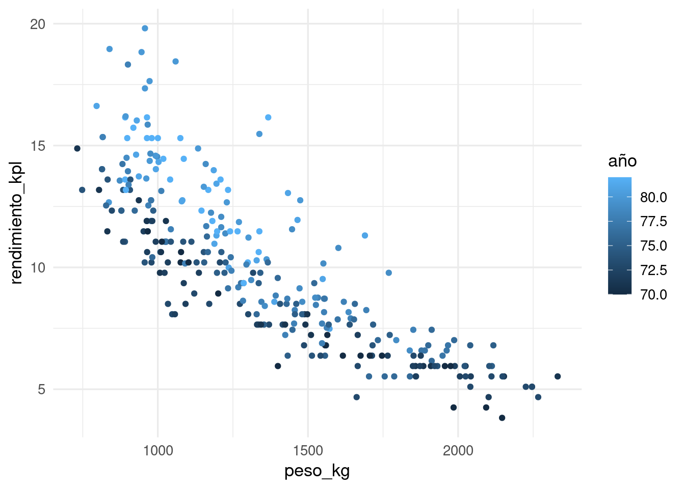
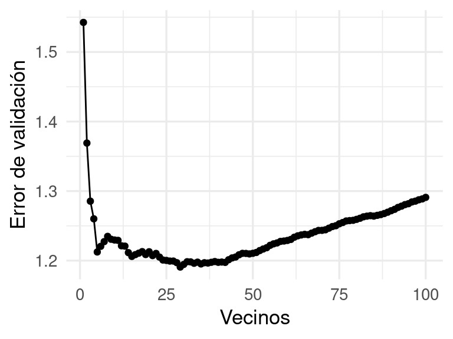
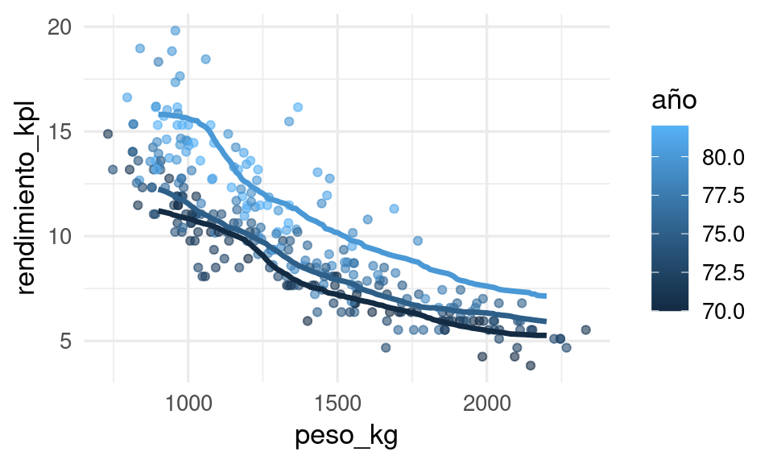
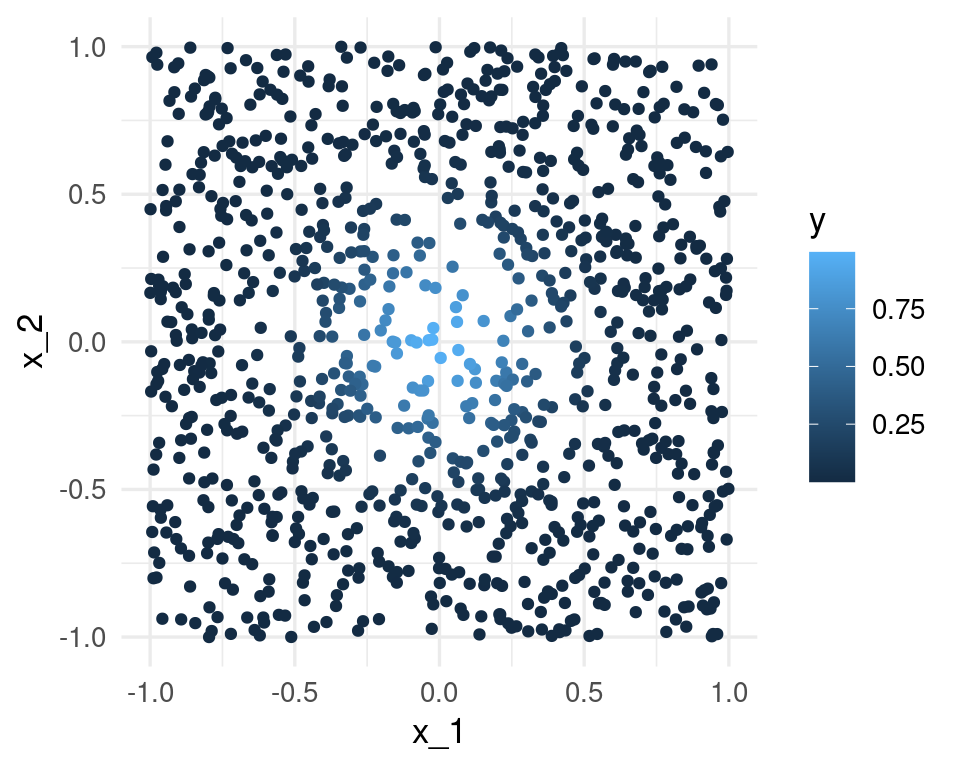
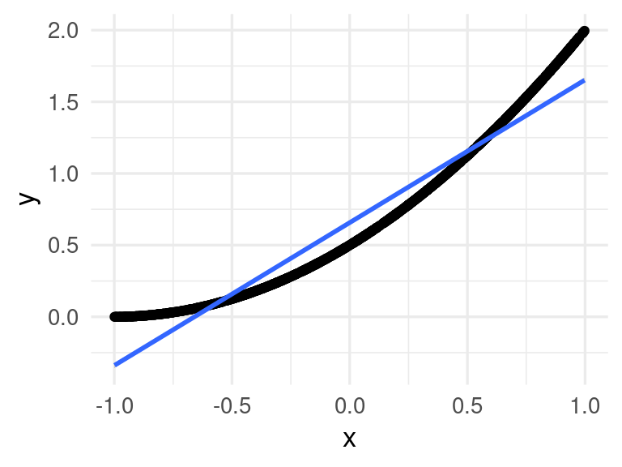
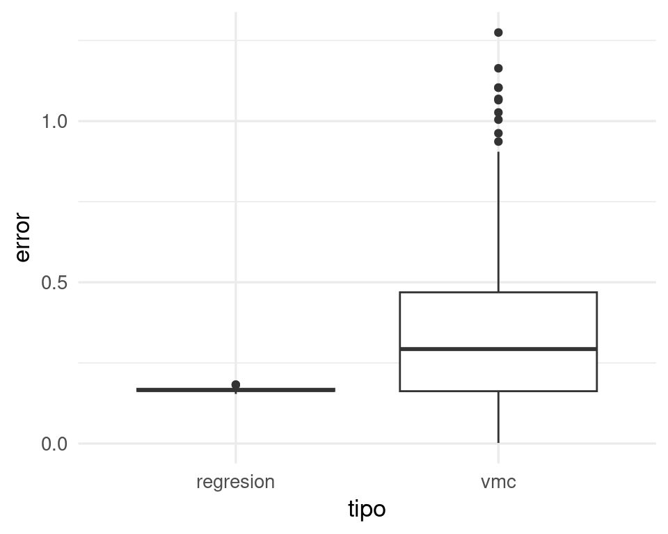

library(tidyverse)
library(gt)
auto <- read_csv("../datos/auto.csv")
# seleccionar variables y poner en sistema métrico
datos <- auto |>
select(name, weight, year, mpg, displacement) |>
mutate(
peso_kg = weight * 0.45359237,
rendimiento_kpl = mpg * (1.609344 / 3.78541178),
año = year
)3 Métodos locales no estructurados
De la discusión de la sección anterior, y examinando el método de \(k\) vecinos más cercanos, puede dar la impresión de que si tenemos suficientes datos, métodos locales como \(k\) vecinos pueden ser superiores a otros métodos más estructurados como regresión lineal, que necesariamente incurren en sesgo porque su estructura siempre está mal especificada.
Sin embargo, no es necesario que se cumpla exactamente el supuesto lineal para que los predictores lineales funcionen de manera predictiva, y veremos que en casos típicos los métodos locales simples como \(k\)-vecinos más cercanos rara vez funcionan apropiadamente.
3.1 Controlando complejidad
Primero examinamos cómo controlamos el nivel de complejidad para un método local como \(k\) vecinos más cercanos. La idea es que:
- Más complejidad: Si tomamos \(k\) demasiado chica, cada estimación usa pocos datos y puede ser ruidosa (incurrimos en variabilidad). Sin embargo, el predictor resultante puede ajustarse a patrones locales y globales.
- Menos complejidad: Si tomamos \(k\) demasiado grande, cada estimación usa potencialmente datos no relevantes muy lejanos a donde queremos predecir (incurrimos en sesgo), sin embargo cada estimación es más estable pues utiliza más datos.
Comenzamos con un ejemplo simple en dimensión baja:
Ejemplo
Vamos a separa en muestra de entrenamiento y de prueba estos datos. Podemos hacerlo como sigue (75% para entrenamiento aproximadamente en este caso, así obtenemos alrededor de 100 casos para prueba):
library(tidymodels)
set.seed(121)
datos_split <- initial_split(datos, prop = 0.75)
datos_entrena <- training(datos_split)
datos_prueba <- testing(datos_split)
nrow(datos_entrena)[1] 294nrow(datos_prueba)[1] 98Vamos a usar año y peso de los coches para predecir su rendimiento:
ggplot(datos_entrena,
aes(x = peso_kg, y = rendimiento_kpl, colour = año)) +
geom_point()
Probaremos con varios valores para \(k\), el número de vecinos más cercanos. La función de predicción ajustada es entonces:
# nótese que normalizamos entradas - esto también es importante
# hacer cuando hacemos vecinos más cercanos, pues en otro caso
# las variables con escalas más grandes dominan el cálculo
vmc_1 <- nearest_neighbor(neighbors = tune(), weight_func = "gaussian") |>
set_engine("kknn") |>
set_mode("regression")
receta_vmc <- recipe(
rendimiento_kpl ~ peso_kg + año, datos_entrena) |>
step_normalize(all_predictors())
flujo_vecinos <- workflow() |>
add_recipe(receta_vmc) |>
add_model(vmc_1)
# definir parámetros que nos interesa explorar
vecinos_params <- parameters(neighbors(range = c(1, 100)))
# definir cuáles valores de los parámetros exploramos
vecinos_grid <- grid_regular(vecinos_params, levels = 100)
mis_metricas <- metric_set(rmse)En la siguiente gráfica mostramos cómo cambia el error de los las predicciones sobre la muestra de prueba separada de la de entrenamiento. En este caso le llamaremos muestra de validación porque más adelante veremos que puede ser conveniente dividir en entrenamiento-validación-prueba en lugar de usar sólo 2 particiones:
r_split <- manual_rset(list(datos_split), "validación")
vecinos_eval_tbl <- tune_grid(flujo_vecinos,
resamples = r_split,
grid = vecinos_grid,
metrics = mis_metricas)
vecinos_ajustes_tbl <- vecinos_eval_tbl |>
unnest(cols = c(.metrics)) |>
select(id, neighbors, .metric, .estimate)
ggplot(vecinos_ajustes_tbl, aes(x = neighbors, y = .estimate)) +
geom_line() + geom_point() +
ylab("Error de validación") + xlab("Vecinos")
Donde obtenemos más o menos lo que esperaríamos: modelos con muy pocos vecinos o demasiados vecinos se desempeñan relativamente mal.
Seleccionaremos el mejor modelo según el error estimado de predicción y visualizamos primero nuestras predicciones y los datos de entrenamiento de la siguiente forma:
mejor_rmse <- select_best(vecinos_eval_tbl, metric = "rmse")
ajuste_1 <- finalize_workflow(flujo_vecinos, mejor_rmse) |>
fit(datos_entrena)
dat_graf <- tibble(peso_kg = seq(900, 2200, by = 10)) |>
crossing(tibble(año = c(70, 75, 80)))
dat_graf <- dat_graf |>
mutate(pred_1 = predict(ajuste_1, dat_graf) |> pull(.pred))
ggplot(datos_entrena, aes(x = peso_kg, group = año, colour = año)) +
geom_point(aes(y = rendimiento_kpl), alpha = 0.6) +
geom_line(data = dat_graf, aes(y = pred_1), linewidth = 1.2)
El método parece funcionar razonablemente bien para este problema simple. Sin embargo, si el espacio de entradas no es de dimensión baja, entonces podemos encontrarnos con dificultades.
3.2 La maldición de la dimensionalidad
El método de k-vecinos más cercanos funciona mejor cuando
- No es necesario hacer \(k\) demasiado grande, de forma que terminemos tomando valores lejanos que inducen sesgo.
- No es necesario hacer \(k\) demasiado chica, de forma que nuestras predicciones sean inestables.
Maldición de la dimensionalidad
En dimensión alta, para la mayoría de las \(\mathbf{x}\) donde queremos hacer predicciones típicamente no existen vecinos cercanos, aún para conjuntos de entrenamiento muy grandes.
Esto implica que para tamaños típicos \(n\) de muestra de entrenamiento:
Si tomamos \(k\) chica, el sesgo por especificación es chico (muestras muy grandes), pero el sesgo de estimación puede ser grande pues estamos de todas formas obligados a buscar vecinos lejos de donde queremos predecir. La variabilidad también es alta pues usamos pocos datos para cada predicción.
Si tomamos \(k\) más grande, el sesgo por especificación tiende ser más grande (pues promediamos sobre regiones relativamente grandes). Perdemos la supuesta ventaja del método local, aún cuando quizá reduzcamos el sesgo de estimación.
Para que una \(k\) chica tenga sesgo de estimación bajo, el tamaño \(n\) de la muestra de entrenamiento tiene que ser gigantesca.
Ejemplo
Consideremos que la salida Y es determinística \(Y = e^{-8\sum_{j=1}^p x_j^2}\). Vamos a usar 1-vecino más cercano para hacer predicciones, con una muestra de entrenamiento de 1000 casos. Generamos $x^{i}’s uniformes en \([ 1,1]\), para \(p = 2\), y calculamos la respuesta \(Y\) para cada caso:
fun_exp <- function(x) exp(-8 * sum(x ^ 2))
x <- map(1:1000, ~ runif(2, -1, 1))
dat <- tibble(x = x) |>
mutate(y = map_dbl(x, fun_exp))
ggplot(dat |> mutate(x_1 = map_dbl(x, 1), x_2 = map_dbl(x, 2)),
aes(x = x_1, y = x_2, colour = y)) + geom_point()
La mejor predicción en \(x_0 = (0,0)\) es \(f((0,0)) = 1\). El vecino más cercano al origen es
dat <- dat |> mutate(dist_origen = map_dbl(x, ~ sqrt(sum(.x^2)))) |>
arrange(dist_origen)
mas_cercano <- dat[1, ]
mas_cercano# A tibble: 1 × 3
x y dist_origen
<list> <dbl> <dbl>
1 <dbl [2]> 0.995 0.0261mas_cercano$x[[1]][1] -0.025090354 0.007277334Nuestra predicción es entonces \(\hat{f}(0)=\) 0.994555, que es bastante cercano al valor verdadero (1).
Ahora intentamos hacer lo mismo para dimensión \(p=8\).
x <- map(1:1000, ~ runif(8, -1, 1))
dat <- tibble(x = x) |>
mutate(y = map_dbl(x, fun_exp))
dat <- dat |> mutate(dist_origen = map_dbl(x, ~ sqrt(sum(.x^2)))) |>
arrange(dist_origen)
mas_cercano <- dat[1, ]
mas_cercano# A tibble: 1 × 3
x y dist_origen
<list> <dbl> <dbl>
1 <dbl [8]> 0.104 0.532mas_cercano$x[[1]][1] 0.30027994 0.36774993 -0.06613864 -0.03673154 0.12260975 0.16718980
[7] -0.01866598 -0.09308947Y el resultado es un desastre. Nuestra predicción es
mas_cercano$y[1] 0.1038249Necesitariamos una muestra de alrededor de un millón de casos para obtener resultados no tan malos (haz pruebas).
¿Qué es lo que está pasando? La razón es que en dimensiones altas, los puntos de la muestra de entrenamiento están muy lejos unos de otros, y están cerca de la frontera, incluso para tamaños de muestra relativamente grandes como n = 1000. Cuando la dimensión crece, la situación empeora exponencialmente.
3.3 Regresión lineal en dimensión alta
Ahora intentamos algo similar con una función que es razonable aproximar con una función lineal:
fun_cuad <- function(x) 0.5 * (1 + x[1])^2Y queremos predecir para \(x=(0,0,\ldots,0)\), cuyo valor exacto es
fun_cuad(0)[1] 0.5Los datos se generan de la siguiente forma:
simular_datos <- function(p = 40){
x <- map(1:1000, ~ runif(p, -1, 1))
dat <- tibble(x = x) |> mutate(y = map_dbl(x, fun_cuad))
dat
}Por ejemplo para dimensión baja \(p=1\) (nótese que una aproximación lineal es razonable):
ejemplo <- simular_datos(p = 1) |> mutate(x = unlist(x))
ggplot(ejemplo, aes(x = x, y = y)) + geom_point() +
geom_smooth(method = "lm")`geom_smooth()` using formula = 'y ~ x'
Ahora repetimos el proceso en dimensión \(p=40\): simulamos las entradas, y aplicamos un vecino más cercano
vmc_1 <- function(dat){
dat <- dat |>
mutate(dist_origen = map_dbl(x, ~ sqrt(sum(.x^2)))) |>
arrange(dist_origen)
mas_cercano <- dat[1, ]
mas_cercano$y
}
set.seed(834)
dat <- simular_datos(p = 40)
vmc_1(dat)[1] 1.206478Este no es un resultado muy bueno. Sin embargo, regresión se desempeña considerablemente mejor:
regresion_pred <- function(dat){
p <- length(dat$x[[1]])
dat_reg <- cbind(
y = dat$y,
x = matrix(unlist(dat$x), ncol = p, byrow=T)) |>
as.data.frame()
mod_lineal <- lm(y ~ ., dat = dat_reg)
origen <- data.frame(matrix(rep(0, p), 1, p))
names(origen) <- names(dat_reg)[2:(p+1)]
predict(mod_lineal, newdata = origen)
}
regresion_pred(dat) 1
0.6677861 La razón de este mejor desempeño de regresión es que en este caso, el modelo lineal explota la estructura aproximadamente lineal del problema (¿cuál estructura lineal? haz algunas gráficas). Nota: corre este ejemplo varias veces con semilla diferente.
Solución: vamos a hacer varias simulaciones, para ver qué modelo se desempeña mejor.
sims <- map(1:200, function(i){
dat <- simular_datos(p = 40)
vmc_y <- vmc_1(dat)
reg_y <- regresion_pred(dat)
tibble(rep = i,
error = c(abs(vmc_y - 0.5), abs(reg_y - 0.5)),
tipo = c("vmc", "regresion"))
}) |> bind_rows()
ggplot(sims, aes(x = tipo, y = error)) + geom_boxplot() 
Así que típicamente el error de vecinos más cercanos es más alto que el de regresión. El error esperado es para vmc es más de doble que el de regresión:
sims |> group_by(tipo) |>
summarise(media_error = mean(error)) |>
gt()| tipo | media_error |
|---|---|
| regresion | 0.1662124 |
| vmc | 0.3542532 |
Lo que sucede más específicamente es que en regresión lineal utilizamos todos los datos para hacer nuestra estimación en cada predicción. Si la estructura del problema es aproximadamente lineal, entonces regresión lineal explota la estructura para hacer pooling de toda la información para construir predicción con sesgo y varianza bajas. En contraste, vecinos más cercanos sufre de varianza alta.
Métodos locales sin estructura
Los métodos locales muchas veces no funcionan bien en dimensión alta. La razón es que:
- El sesgo es alto, pues promediamos puntos muy lejanos al lugar donde queremos predecir (aunque tomemos pocos vecinos cercanos).
- En el caso de que encontremos unos pocos puntos cercanos, la varianza también puede ser alta porque promediamos relativamente pocos vecinos.
Métodos con más estructura global, apropiada para el problema, logran explotar información de puntos que no están tan cerca del lugar donde queremos predecir.
Muchas veces el éxito en la predicción depende de establecer esas estructuras apropiadas ya sea mediante:
- Estructura en nuestros modelos (por ejemplo, efectos lineales cuando variables tienen efectos aproximadamente lineales, árboles cuando hay algunas interacciones, redes convolucionales para procesamiento de imágenes y señales, dependencia del contexto en modelos de lenguaje, etc.)
- Reducción de dimensionalidad apropiada (por ejemplo, embeddings basados en otros modelos, o técnicas como componentes principales/descompocisión en valores singulares, etc.).